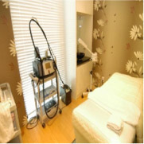
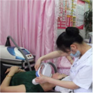
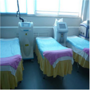
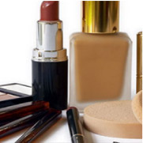
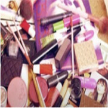

沈阳东城皮肤医院
不同于美容院整形和无照经营的小诊所，在沈阳东城皮肤医院，
您可以享受科学的诊疗服务。我们拥有全面完善的
治疗前、中、后管理体系，为您提供一对一的私密诊疗，
让您安心舒适的治疗皮肤问题。
我要预约东城医院>>很多美容整形医院只能消除表层，治表不治根。
A LOT OF COSMETIC PLASTIC SURGERY HOSPITAL CAN ONLY
REMOVE THE SURFACE LAYER, THE ROOT OF THE TREATMENT TABLE
- 
- 
- 
化妆品、能快速变白，但停用后，立即返黑。
自制小妙招到不到治根目的。
COSMETICS, CAN QUICKLY BECOME WHITE, BUT STOPPED IMMEDIATELY
AFTER THE RETURN OF BLACK. THE SELF-MADE SMALL
- 

- 

 术前制定个性化诊疗方案
术前制定个性化诊疗方案